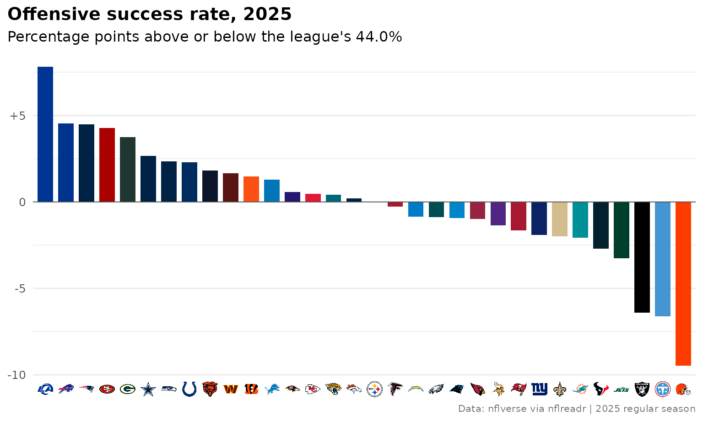
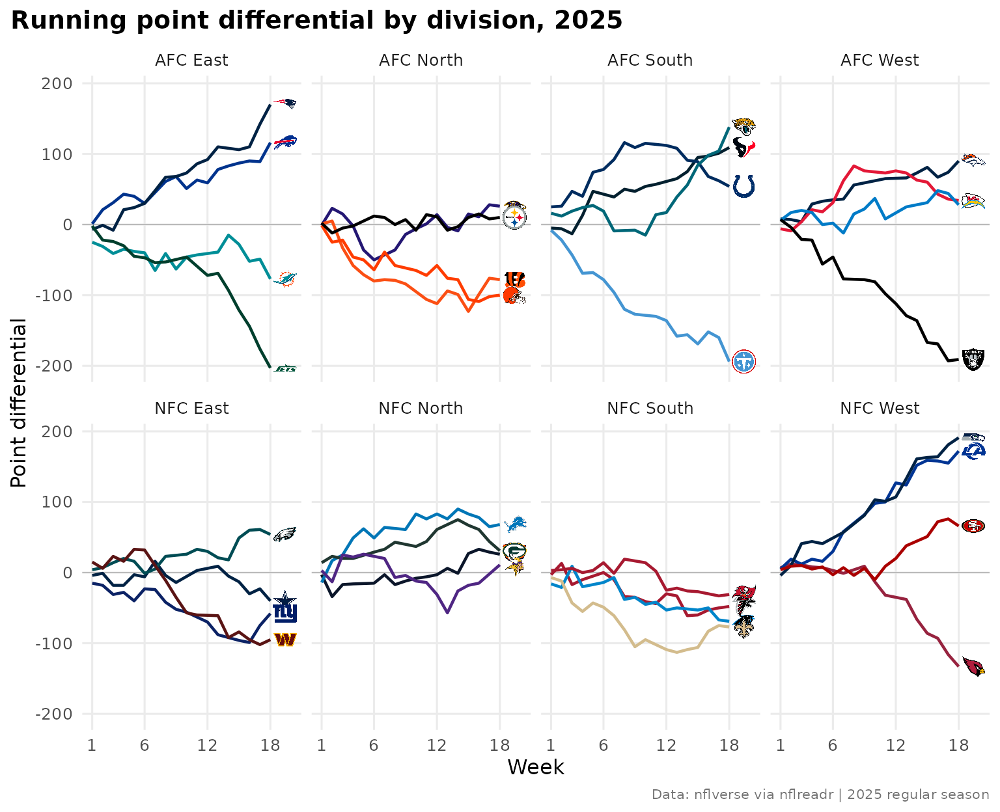
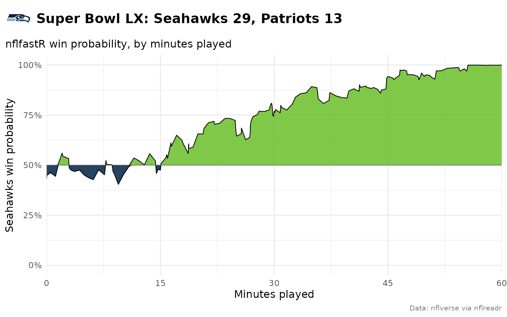
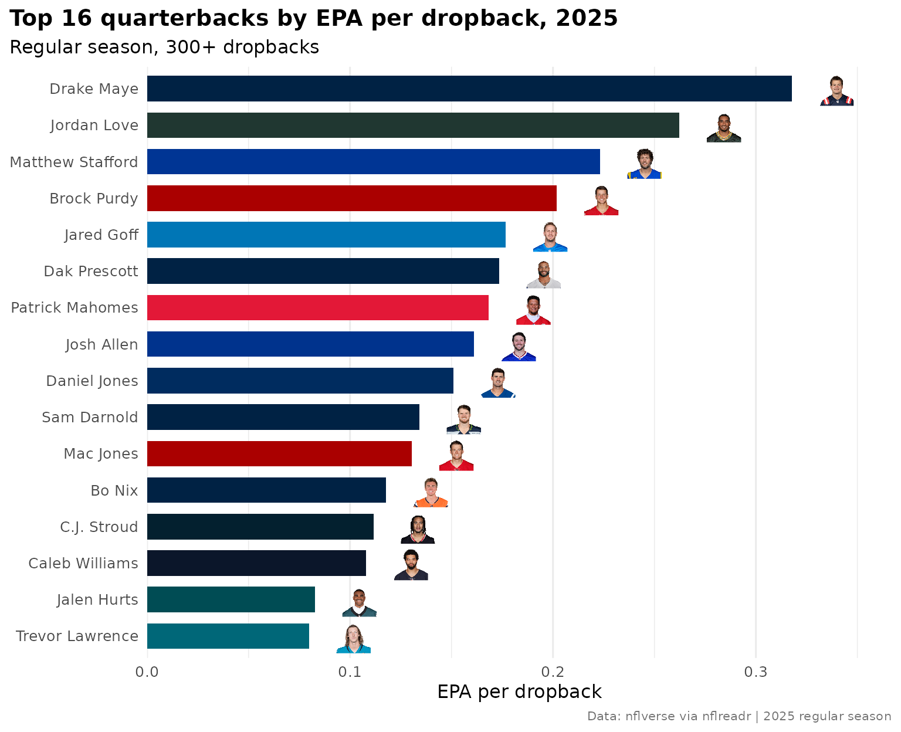
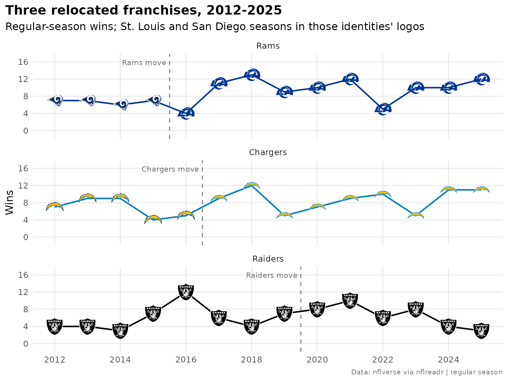
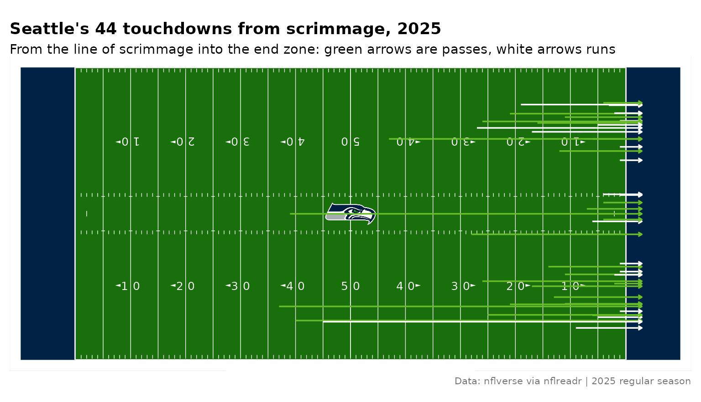
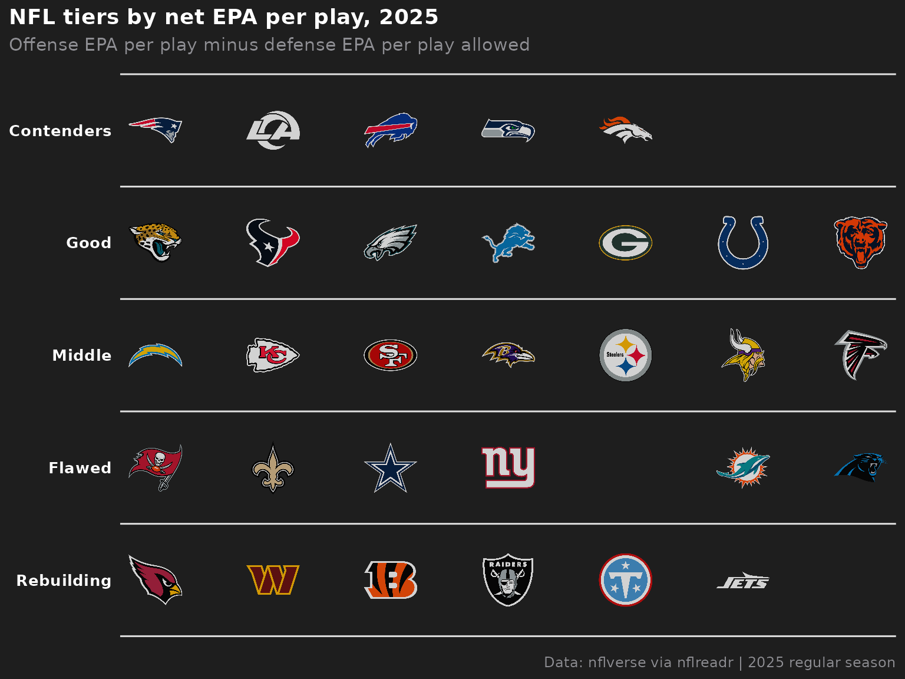

On this page
Ten charts and tables from the 2025 NFL season: offense against defense with team logos, a ranked bar chart with logos on the axis, division standings, small multiples in team colors, the Super Bowl’s win probability with a logo in the title, two quarterback leaderboards with headshots, three relocated franchises in the logos of their eras, a field in a team’s colors and a tier list.
The play-by-play is nflfastR’s, read from the nflverse releases with
nflreadr;
nflfastR::load_pbp() reads the same file. sdvplotR takes
nflverse’s team abbreviations (LA, LV,
WAS) and GSIS player ids as they are, so nothing needs
renaming on the way in.
library(sdvplotR)
library(ggplot2)
library(dplyr, warn.conflicts = FALSE)
library(gt)
season <- 2025
caption <- "Data: nflverse via nflreadr | 2025 regular season"
pbp <- nflreadr::load_pbp(season)
# Regular-season scrimmage plays with an EPA value
plays <- pbp |>
filter(season_type == "REG", play_type %in% c("pass", "run"), !is.na(epa))
nrow(plays)
#> [1] 32941A plain theme_minimal() with a bold, left-aligned title
serves every chart below:
theme_set(
theme_minimal(base_size = 12) +
theme(
plot.title = element_text(face = "bold"),
plot.title.position = "plot",
plot.caption = element_text(color = "grey45", size = 8)
)
)1. Offense vs defense EPA per play
The chart every NFL season ends with: each team’s offensive EPA per
play against the EPA per play its defense allowed, with the team’s logo
as the point. geom_mean_lines() draws the league averages,
and the defense axis is reversed so the best teams sit top right.
offense <- plays |>
group_by(team = posteam) |>
summarise(off_epa = mean(epa), off_sr = mean(success), .groups = "drop")
defense <- plays |>
group_by(team = defteam) |>
summarise(def_epa = mean(epa), def_sr = mean(success), .groups = "drop")
teams <- inner_join(offense, defense, by = "team")
ggplot(teams, aes(x = off_epa, y = def_epa)) +
geom_mean_lines(aes(x0 = off_epa, y0 = def_epa), color = "grey50", linewidth = 0.4) +
geom_sdv_logos(aes(team = team), sport = "nfl", width = 0.055, alpha = 0.9) +
annotate(
"text", x = max(teams$off_epa), y = min(teams$def_epa),
label = "good offense, good defense", hjust = 1, vjust = 1, color = "grey45", size = 3.2
) +
annotate(
"text", x = min(teams$off_epa), y = max(teams$def_epa),
label = "bad offense, bad defense", hjust = 0, vjust = 0, color = "grey45", size = 3.2
) +
scale_y_reverse() +
labs(
title = "NFL offense vs defense, 2025",
x = "Offense EPA per play",
y = "Defense EPA per play allowed (better is up)",
caption = caption
)
2. A ranked bar chart with logos on the axis
Offensive success rate against the league average, sorted, with each
bar in its team’s primary color from scale_fill_sdv(). The
x axis keeps the abbreviations as its labels, and
element_sdv_logo() set on axis.text.x draws
them as logos.
league_sr <- mean(plays$success)
ranked <- teams |>
mutate(sr_diff = off_sr - league_sr) |>
arrange(desc(sr_diff), team) |>
mutate(team = factor(team, levels = team))
ggplot(ranked, aes(x = team, y = sr_diff)) +
geom_col(aes(fill = team), width = 0.75) +
geom_hline(yintercept = 0, color = "grey30", linewidth = 0.3) +
scale_fill_sdv(sport = "nfl") +
scale_y_continuous(labels = function(v) sub("^\\+0$", "0", sprintf("%+.0f", 100 * v))) +
labs(
title = "Offensive success rate, 2025",
subtitle = sprintf("Percentage points above or below the league's %.1f%%", 100 * league_sr),
x = NULL,
y = NULL,
caption = caption
) +
theme(
legend.position = "none",
panel.grid.major.x = element_blank(),
axis.text.x = element_sdv_logo(sport = "nfl", size = 0.5)
)
element_sdv_logo() draws the axis labels with ggpath.
The alternative, scale_x_sdv() with
theme_x_sdv(), writes them as HTML <img>
tags for ggtext; the college football tutorial uses it on the y
axis.
3. Division standings table
Records come from the schedule
(nflreadr::load_schedules()), divisions and nicknames from
nflreadr::load_teams(). gt_sdv_logos() turns
the abbreviation column into logos, data_color() shades the
point differential and gt_theme_sdv() gives the table the
SportsDataverse look.
schedule <- nflreadr::load_schedules(season)
# One row per team per regular-season game
games <- schedule |>
filter(game_type == "REG", !is.na(result)) |>
nflreadr::clean_homeaway() |>
select(week, team, opponent, team_score, opponent_score)
nfl_teams <- nflreadr::load_teams() |>
select(team = team_abbr, name = team_name, nick = team_nick, division = team_division)
standings <- games |>
group_by(team) |>
summarise(
W = sum(team_score > opponent_score),
L = sum(team_score < opponent_score),
T = sum(team_score == opponent_score),
PF = sum(team_score),
PA = sum(opponent_score),
.groups = "drop"
) |>
mutate(Diff = PF - PA, pct = (W + T / 2) / (W + L + T)) |>
inner_join(nfl_teams, by = "team") |>
# win percentage, then point differential: not the NFL's tiebreakers
arrange(division, desc(pct), desc(Diff), team) |>
select(division, logo = team, nick, W, L, T, PF, PA, Diff)
limit <- max(abs(standings$Diff)) # a color scale centered on zero
standings |>
gt(groupname_col = "division") |>
gt_sdv_logos(columns = "logo", sport = "nfl", height = 22) |>
cols_label(logo = "", nick = "Team") |>
data_color(
columns = "Diff",
palette = c("#b2182b", "#f7f7f7", "#1b7837"),
domain = c(-limit, limit)
) |>
tab_header(title = "2025 NFL standings", subtitle = "Regular season, by division") |>
tab_source_note(caption) |>
gt_theme_sdv(density = "compact")| 2025 NFL standings | |||||||
| Regular season, by division | |||||||
| Team | W | L | T | PF | PA | Diff | |
|---|---|---|---|---|---|---|---|
| AFC East | |||||||
 |
Patriots | 14 | 3 | 0 | 490 | 320 | 170 |
 |
Bills | 12 | 5 | 0 | 481 | 365 | 116 |
 |
Dolphins | 7 | 10 | 0 | 347 | 424 | -77 |
 |
Jets | 3 | 14 | 0 | 300 | 503 | -203 |
| AFC North | |||||||
 |
Steelers | 10 | 7 | 0 | 397 | 387 | 10 |
 |
Ravens | 8 | 9 | 0 | 424 | 398 | 26 |
 |
Bengals | 6 | 11 | 0 | 414 | 492 | -78 |
 |
Browns | 5 | 12 | 0 | 279 | 379 | -100 |
| AFC South | |||||||
 |
Jaguars | 13 | 4 | 0 | 474 | 336 | 138 |
 |
Texans | 12 | 5 | 0 | 404 | 295 | 109 |
 |
Colts | 8 | 9 | 0 | 466 | 412 | 54 |
 |
Titans | 3 | 14 | 0 | 284 | 478 | -194 |
| AFC West | |||||||
 |
Broncos | 14 | 3 | 0 | 401 | 311 | 90 |
 |
Chargers | 11 | 6 | 0 | 368 | 340 | 28 |
 |
Chiefs | 6 | 11 | 0 | 362 | 328 | 34 |
 |
Raiders | 3 | 14 | 0 | 241 | 432 | -191 |
| NFC East | |||||||
 |
Eagles | 11 | 6 | 0 | 379 | 325 | 54 |
 |
Cowboys | 7 | 9 | 1 | 471 | 511 | -40 |
 |
Commanders | 5 | 12 | 0 | 356 | 451 | -95 |
 |
Giants | 4 | 13 | 0 | 381 | 439 | -58 |
| NFC North | |||||||
 |
Bears | 11 | 6 | 0 | 441 | 415 | 26 |
 |
Packers | 9 | 7 | 1 | 391 | 360 | 31 |
 |
Lions | 9 | 8 | 0 | 481 | 413 | 68 |
 |
Vikings | 9 | 8 | 0 | 344 | 333 | 11 |
| NFC South | |||||||
 |
Buccaneers | 8 | 9 | 0 | 380 | 411 | -31 |
 |
Falcons | 8 | 9 | 0 | 353 | 401 | -48 |
 |
Panthers | 8 | 9 | 0 | 311 | 380 | -69 |
 |
Saints | 6 | 11 | 0 | 306 | 383 | -77 |
| NFC West | |||||||
 |
Seahawks | 14 | 3 | 0 | 483 | 292 | 191 |
 |
Rams | 12 | 5 | 0 | 518 | 346 | 172 |
 |
49ers | 12 | 5 | 0 | 437 | 371 | 66 |
 |
Cardinals | 3 | 14 | 0 | 355 | 488 | -133 |
| Data: nflverse via nflreadr | 2025 regular season | |||||||
4. Small multiples by division
Each team’s running point differential through the season, one panel
per division. scale_color_sdv() colors each line by its
team, and a second geom_sdv_logos() layer, given only each
team’s last week, puts the logo just past the end of its line. Because
that layer’s data carries the division column too, each
logo lands in its own panel.
running <- games |>
arrange(team, week) |>
group_by(team) |>
mutate(diff = cumsum(team_score - opponent_score)) |>
ungroup() |>
inner_join(select(nfl_teams, team, division), by = "team")
ends <- running |>
group_by(team) |>
slice_max(week, n = 1) |>
ungroup()
ggplot(running, aes(x = week, y = diff, color = team)) +
geom_hline(yintercept = 0, color = "grey70", linewidth = 0.3) +
geom_line(linewidth = 0.8) +
geom_sdv_logos(
aes(x = week + 1.4, y = diff, team = team),
data = ends, sport = "nfl", width = 0.12, inherit.aes = FALSE
) +
scale_color_sdv(sport = "nfl") +
scale_x_continuous(breaks = c(1, 6, 12, 18), limits = c(1, 20)) +
facet_wrap(~division, ncol = 4) +
labs(
title = "Running point differential by division, 2025",
x = "Week",
y = "Point differential",
caption = caption
) +
theme(legend.position = "none", panel.grid.minor = element_blank())
5. A win probability chart with a logo in the title
nflfastR’s home_wp traced through the Super Bowl.
ggtitle_image() puts the winner’s logo beside the title
(with theme_title_image(), which renders the title as
markdown and centres the logo on the words). The fills are the teams’
colors from sdv_team_colors(); Seattle and New England
share the same navy, so when the two primaries match the away team
switches to its secondary color.
sb <- schedule |> filter(game_type == "SB")
away <- sb$away_team
home <- sb$home_team
winner <- if (sb$away_score > sb$home_score) away else home
wp <- pbp |>
filter(game_id == sb$game_id, !is.na(home_wp)) |>
transmute(minute = (3600 - game_seconds_remaining) / 60, away_wp = 1 - home_wp)
away_color <- sdv_team_colors("nfl", away)
home_color <- sdv_team_colors("nfl", home)
if (away_color == home_color) away_color <- sdv_team_colors("nfl", away, type = "secondary")
nick <- function(abbr) nfl_teams$nick[match(abbr, nfl_teams$team)]
title <- sprintf(
"Super Bowl %s: %s %d, %s %d",
utils::as.roman(season - 1965), nick(away), sb$away_score, nick(home), sb$home_score
)
ggplot(wp, aes(x = minute)) +
geom_ribbon(aes(ymin = 0.5, ymax = pmax(away_wp, 0.5)), fill = away_color, alpha = 0.85) +
geom_ribbon(aes(ymin = pmin(away_wp, 0.5), ymax = 0.5), fill = home_color, alpha = 0.85) +
geom_line(aes(y = away_wp), linewidth = 0.4) +
geom_hline(yintercept = 0.5, color = "grey40", linewidth = 0.3) +
scale_x_continuous(breaks = c(0, 15, 30, 45, 60), limits = c(0, 60), expand = c(0, 0)) +
scale_y_continuous(labels = scales::percent, limits = c(0, 1)) +
ggtitle_image(
title_image = winner,
title = title,
subtitle = "nflfastR win probability, by minutes played",
image_height = 30,
sport = "nfl"
) +
labs(
x = "Minutes played",
y = paste(nick(away), "win probability"),
caption = "Data: nflverse via nflreadr"
) +
theme_title_image(size = 15, face = "bold")
6. A quarterback leaderboard with headshots
nflverse identifies players by GSIS id; the id column of
the play-by-play is the quarterback on each dropback, scrambles
included. geom_sdv_headshots() takes those ids and draws
each player’s NFL.com headshot. The full names come from
nflreadr::load_players(), and the bars take each
quarterback’s team color.
players <- nflreadr::load_players() |>
select(id = gsis_id, player = display_name)
qbs <- pbp |>
filter(season_type == "REG", qb_dropback == 1, !is.na(epa), !is.na(id)) |>
arrange(game_id, play_id) |>
group_by(id) |>
summarise(
team = last(posteam), # the team he finished the season with
dropbacks = n(),
epa = mean(epa),
success = mean(success),
cpoe = mean(cpoe, na.rm = TRUE),
.groups = "drop"
) |>
filter(dropbacks >= 300) |>
left_join(players, by = "id") |>
arrange(desc(epa), id)
top_qbs <- head(qbs, 16)
ggplot(top_qbs, aes(x = epa, y = reorder(player, epa))) +
geom_col(aes(fill = team), width = 0.7) +
geom_sdv_headshots(aes(x = epa + 0.022, player_id = id), sport = "nfl", height = 0.058) +
scale_fill_sdv(sport = "nfl") +
scale_x_continuous(expand = expansion(mult = c(0, 0.08))) +
labs(
title = "Top 16 quarterbacks by EPA per dropback, 2025",
subtitle = "Regular season, 300+ dropbacks",
x = "EPA per dropback",
y = NULL,
caption = caption
) +
theme(legend.position = "none", panel.grid.major.y = element_blank())
7. The same leaderboard as a table
gt_sdv_headshots() is the table version: it turns a
column of GSIS ids into headshots, next to gt_sdv_logos()
for the team. This one is styled with
gt_theme_athletic().
top_qbs |>
head(12) |>
mutate(rank = row_number(), headshot = id) |>
select(rank, headshot, player, team, dropbacks, epa, success, cpoe) |>
gt() |>
gt_sdv_headshots(columns = "headshot", sport = "nfl", height = 36) |>
gt_sdv_logos(columns = "team", sport = "nfl", height = 24) |>
fmt_number(columns = "epa", decimals = 3) |>
fmt_percent(columns = "success", decimals = 1) |>
fmt_number(columns = "cpoe", decimals = 1, force_sign = TRUE) |>
data_color(columns = "epa", palette = c("#f7f7f7", "#1b7837")) |>
cols_label(
rank = "#", headshot = "", player = "Quarterback", team = "Team",
dropbacks = "Dropbacks", epa = "EPA/db", success = "Success", cpoe = "CPOE"
) |>
tab_header(
title = "The 2025 quarterback leaderboard",
subtitle = "EPA per dropback, regular season, 300+ dropbacks"
) |>
tab_source_note(caption) |>
gt_theme_athletic(density = "compact")| The 2025 quarterback leaderboard | |||||||
| EPA per dropback, regular season, 300+ dropbacks | |||||||
| # | Quarterback | Team | Dropbacks | EPA/db | Success | CPOE | |
|---|---|---|---|---|---|---|---|
| 1 |  |
Drake Maye | |
602 | 0.318 | 55.3% | +10.8 |
| 2 |  |
Jordan Love | |
485 | 0.262 | 50.5% | +5.5 |
| 3 |  |
Matthew Stafford | |
624 | 0.223 | 52.7% | +1.5 |
| 4 |  |
Brock Purdy | |
316 | 0.202 | 53.2% | +7.2 |
| 5 |  |
Jared Goff | |
619 | 0.177 | 48.6% | +1.8 |
| 6 |  |
Dak Prescott | |
657 | 0.173 | 48.7% | +2.2 |
| 7 |  |
Patrick Mahomes | |
589 | 0.168 | 49.9% | +0.3 |
| 8 |  |
Josh Allen | |
554 | 0.161 | 48.4% | +3.5 |
| 9 |  |
Daniel Jones | |
431 | 0.151 | 50.3% | +2.3 |
| 10 |  |
Sam Darnold | |
516 | 0.134 | 52.5% | +5.2 |
| 11 |  |
Mac Jones | |
312 | 0.130 | 52.2% | +3.7 |
| 12 |  |
Bo Nix | |
674 | 0.118 | 45.1% | −1.2 |
| Data: nflverse via nflreadr | 2025 regular season | |||||||
8. Relocated franchises and their eras
Schedules use the abbreviation a team had that season:
OAK until 2019, SD until 2016,
STL until 2015. resolve_historical_abbr() maps
each to today’s franchise and passes anything else through, so it reads
only the old codes. clean_team_abbrs() applies the same
mapping and every other spelling too, so other sources’ LAR
and a full name become nflverse’s LA as well:
data.frame(abbr = c("OAK", "SD", "STL", "LAR", "Los Angeles Rams")) |>
mutate(
current = resolve_historical_abbr(abbr, sport = "nfl"),
key = clean_team_abbrs(abbr, sport = "nfl")
)
#> abbr current key
#> 1 OAK LV LV
#> 2 SD LAC LAC
#> 3 STL LA LA
#> 4 LAR LAR LA
#> 5 Los Angeles Rams Los Angeles Rams LAGrouping on that key keeps each franchise together across its move.
The logos take the season’s own abbreviation plus a season
aesthetic. sdvplotR keeps the marks of relocated NFL identities, so the
STL and SD seasons draw the St. Louis Rams’
and San Diego Chargers’ logos; every season of a current identity draws
today’s logo, including the Rams’ and Chargers’ first years in Los
Angeles before their 2020 redesigns. (The Raiders kept their
shield.)
history <- nflreadr::load_schedules(2012:season) |>
filter(game_type == "REG") |>
nflreadr::clean_homeaway() |>
filter(team %in% c("OAK", "LV", "SD", "LAC", "STL", "LA"))
wins <- history |>
group_by(season, team) |>
summarise(wins = sum(team_score > opponent_score), .groups = "drop") |>
mutate(franchise = clean_team_abbrs(team, sport = "nfl"))
moves <- data.frame(
franchise = c("LV", "LAC", "LA"),
moved = c(2020, 2017, 2016) # the first season in the new city
) |>
mutate(label = paste0(nick(franchise), " move"))
ggplot(wins, aes(x = season, y = wins)) +
geom_vline(aes(xintercept = moved - 0.5), data = moves, linetype = "dashed", color = "grey50") +
geom_line(aes(color = franchise), linewidth = 0.8) +
geom_sdv_logos(aes(team = team, season = season), sport = "nfl", height = 0.22) +
geom_text(
aes(x = moved - 0.6, y = 16.5, label = label),
data = moves, hjust = 1, vjust = 1, size = 3, color = "grey40"
) +
scale_color_sdv(sport = "nfl") +
scale_x_continuous(breaks = seq(2012, season, 2)) +
scale_y_continuous(limits = c(-1, 17), breaks = c(0, 4, 8, 12, 16)) +
facet_wrap(~franchise, ncol = 1, labeller = as_labeller(\(x) nick(x))) +
labs(
title = "Three relocated franchises, 2012-2025",
subtitle = "Regular-season wins; St. Louis and San Diego seasons in those identities' logos",
x = NULL,
y = "Wins",
caption = "Data: nflverse via nflreadr | regular season"
) +
theme(legend.position = "none", panel.grid.minor = element_blank())
9. A field in team colors
sdv_surface("nfl", team) draws a regulation field with
sportyR, its end zones
in the team’s colors, and center_logo = TRUE puts the logo
at midfield. sportyR’s field is centered on midfield in yards, so a line
of scrimmage yardline_100 yards from the goal is at
x = 50 - yardline_100. On top: every Seattle touchdown from
scrimmage, from the line of scrimmage into the end zone, placed by the
side of the field the play went to.
tds <- pbp |>
filter(
season_type == "REG", posteam == "SEA", td_team == "SEA",
play_type %in% c("pass", "run")
) |>
arrange(game_id, play_id) |>
mutate(side = coalesce(pass_location, run_location))
set.seed(1) # the jitter that keeps arrows in one lane apart
lane <- c(left = 15, middle = 0, right = -15)
tds <- tds |>
mutate(
y = coalesce(lane[side], 0) + runif(n(), -6, 6),
x = 50 - yardline_100
)
sdv_surface("nfl", "SEA", center_logo = TRUE, display_range = "in_bounds_only") +
geom_segment(
aes(x = x, xend = 53, y = y, yend = y, color = play_type),
data = tds,
arrow = arrow(length = unit(0.12, "cm")), linewidth = 0.6
) +
scale_color_manual(
values = c(pass = unname(sdv_team_colors("nfl", "SEA", type = "secondary")), run = "white")
) +
labs(
title = sprintf("Seattle's %d touchdowns from scrimmage, 2025", nrow(tds)),
subtitle = "From the line of scrimmage into the end zone: green arrows are passes, white arrows runs",
caption = caption
) +
theme_void() +
theme(
plot.title = element_text(face = "bold"),
plot.caption = element_text(color = "grey45", size = 8),
plot.margin = margin(8, 8, 8, 8),
legend.position = "none"
)
10. Team tiers
A tier list from net EPA per play (offense EPA per play minus defense
EPA per play allowed), drawn by sdv_team_tiers(). It needs
only tier_no and team; the order within each
tier is the order of the rows.
sizes <- c(5, 7, 7, 7, 6) # teams per tier, top to bottom
tiers <- teams |>
mutate(net = off_epa - def_epa) |>
arrange(desc(net), team) |>
mutate(tier_no = rep(seq_along(sizes), sizes)) |>
select(tier_no, team)
sdv_team_tiers(
tiers,
sport = "nfl",
title = "NFL tiers by net EPA per play, 2025",
subtitle = "Offense EPA per play minus defense EPA per play allowed",
caption = caption,
tier_desc = c(
"1" = "Contenders",
"2" = "Good",
"3" = "Middle",
"4" = "Flawed",
"5" = "Rebuilding"
)
)
#> Warning: ggpath failed to read an image from
#> https://a.espncdn.com/i/teamlogos/nfl/500-dark/cle.png. It will insert an empty
#> graphic object instead. Here is the error message: Error in
#> curl::curl_download(url, tmp, handle = h) : HTTP response code said error
#> [a.espncdn.com]: The requested URL returned error: 404
Next steps
- nflfastR documents every play-by-play column used here, and nflreadr the other loaders.
- The college football tutorial covers 130+ teams, conference logos and logos on the y axis.
- Social Posting sizes and saves charts like these for social media.